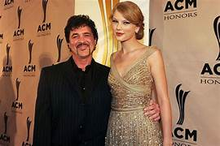
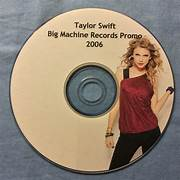
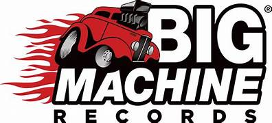
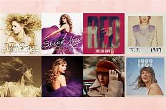
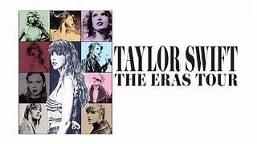
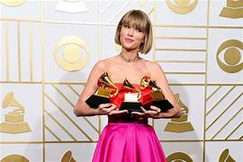
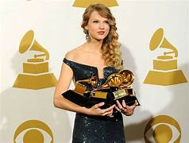
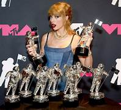

Assuntos abordados na pagina:
Quem é Taylor swift?
Tragetoria
taylor's version
recordes
Albuns
Taylor Alison Swift nasceu no dia 13 de dezembro de 1989 em Reading, Pensilvânia. Ela é a filha mais velha do corretor da bolsa de valores Scott Swift e da dona de casa Andrea Swift, e foi criada ao lado de seu irmão mais novo, Austin Swift, em uma fazenda de cultivo de árvores de Natal na cidade interiorana de Reading.
Aos 10 anos, influenciada pelo meio artístico e por seus ídolos, como LeAnn Rimes, Shania Twain, Faith Hill e sua avó, Marjorie Finlay, que era cantora de ópera, Taylor começou a se apresentar em shows de karaokê, festivais e feiras na cidade onde morava. Nessa época, Taylor afirma ter sofrido bullying na escola, pois as outras crianças não estavam acostumadas com seu gosto pela música country e seu desejo de se tornar uma cantora profissional. Com apenas 11 anos, Taylor convenceu seus pais a viajarem até Nashville, a capital da música country. Sua mãe parava o carro em frente às grandes gravadoras, e uma pequena Taylor entregava um CD contendo algumas músicas demo gravadas em estúdio, pedindo ingenuamente para que ligassem caso estivessem interessadas. Taylor voltou para casa e, mesmo sem receber resposta das gravadoras, não desistiu. Ela percebeu que precisava se diferenciar das inúmeras outras cantoras de country que lutavam por um contrato. Aos 12 anos, aprendeu a tocar os primeiros acordes no violão com a ajuda de um rapaz que foi consertar seu computador. Sua primeira música, chamada “Lucky You”, foi escrita quando tinha 13 anos. Após perceberem que Taylor não desistiria de realizar seu sonho, seus pais começaram a fazer visitas regulares a Nashville. Quando ela tinha 14 anos, a família Swift mudou-se definitivamente para uma casa espaçosa próxima a um lago em Hendersonville, um dos subúrbios da capital da música country. Todos os dias, depois da escola, Taylor ia ao centro da cidade e escrevia músicas com co-escritores locais pela Sony/VGA, seu primeiro emprego no mundo da música.
Aos 15 anos, Taylor assinou um contrato de desenvolvimento e experiência com a famosa gravadora RCA, válido por um ano. Em 2005, Taylor teve a chance de se apresentar no The Bluebird Café, um lugar tradicional em Nashville onde vários compositores se apresentam todas as noites. Ela chamou a atenção de Scott Borchetta, que estava abrindo sua nova gravadora independente. Borchetta a convidou para ser sua primeira aposta na Big Machine Records, permitindo que ela escrevesse suas próprias músicas. Esta foi a gravadora de Taylor até 2018.
  No mesmo ano em que assinou o contrato, Taylor começou a gravar suas primeiras composições, que mais tarde formariam seu primeiro álbum, “Taylor Swift”. Seu single de estreia, “Tim McGraw”, foi tocado nas rádios no dia 19 de junho de 2006. Com o sucesso do single, Taylor lançou seu primeiro videoclipe, que foi gravado em julho de 2006 e estreou no canal country GAC. A música foi um sucesso. Pouco tempo depois, o álbum chegou à primeira posição da parada Billboard Top Country Albums e ao quinto lugar na Billboard 200, permanecendo no topo das listas por 24 semanas.
Em 2008, taylor lança seu proximo sucesso: Fearless. Seus lançamentos posteriores, Speak Now (2010), Red (2012), 1989 (2014) e Reputation (2017) venderam — cada um —, mais de um milhão de cópias em suas semanas de estreia em terras estadunidenses, tornando Swift a primeira artista na história a realizar esse feito. Os três últimos citados recalibraram sua imagem do country para a música pop.
Em novembro de 2018, Swift assinou um contrato com a Republic Records após o término de seu contrato com a Big Machine. A mídia noticiou em junho de 2019 que Scooter braun comprou a Big Machine de Borchetta por US$330 milhões, financiados por diversas empresas de private equity. Braun havia se tornado o proprietário de todos os masters, videoclipes e artes autorais da Big Machine, incluindo os dos seis primeiros álbuns de estúdio de Swift. Em resposta, Swift afirmou que tentou comprar os masters, mas a Big Machine ofereceu condições desfavoráveis, e ela sabia que a gravadora os venderia para outra pessoa, mas não esperava Braun como comprador, alegando que ele era um "valentão incessante e manipulador".

Em junho de 2019, Taylor Swift entrou em uma disputa com sua antiga gravadora, Big Machine Records, seu fundador Scott Borchetta e seu novo proprietário Scooter Braun sobre a propriedade dos masters de seus seis primeiros álbuns de estúdio. Isso levou Swift a lançar regravações de quatro dos álbuns entre 2021 e 2023 para readquirir controle sobre seu catálogo musical. Dessa forma nasceu "taylor's version".
Big Machine e Swift se envolveram em uma série de desentendimentos que levaram a mais atritos; Swift alegou que a gravadora a impediu de apresentar suas canções no American Music Awards de 2019 e de usá-las no seu documentário Miss Americana (2020), ao passo que a Big Machine lançou Live from Clear Channel Stripped 2008 (2020), uma gravação ao vivo de Swift, sem seu consentimento. Swift anunciou que regravaria os seis álbuns e que seria dona das novas masterizações. Em outubro de 2020, Braun vendeu os antigos masters para a Shamrock, uma empresa de investimentos da família Disney, por US$405 milhões, sob a condição de que continuasse lucrando com as masterizações. Swift expressou sua desaprovação novamente, rejeitou a oferta da Shamrock por uma parceria acionária e lançou quatro álbuns regravados com sucesso comercial e aclamação da crítica, promovendo-os com a The Eras Tour (2023–2024), que se tornou a turnê musical de maior bilheteria de todos os tempos. As canções "All Too Well (10 Minute Version)" (2021) e "Is It Over Now?" (2023) lideraram a Billboard Hot 100, quebrando vários recordes.
Ao longo de sua carreira, estima-se que Swift tenha vendido cerca de 200 milhões de cópias com seus trabalhos, sendo reconhecida como uma recordista em vendas no mundo. Entre seus diversos prêmios e reconhecimentos encontram-se quatorze Grammy Award — sendo o único artista a vencer quatro vezes na categoria Álbum do Ano —, um Emmy Award, trinta MTV Video Music Awards (VMA) e 84 recordes mundiais no Guinness World Records. Em publicações da Rolling Stone e The Daily Telegraph, Swift é citada como uma das maiores compositoras de todos os tempos, além de ter sido eleita a quinta maior mulher da história da música pela revista Bustle. Além disso, ela foi homenageada como artista e mulher da década na 47ª edição do American Music Awards, e pela Billboard, respectivamente. Também é tida como um ícone da cultura popular devido à sua influente carreira, filantropia e empoderamento feminino. Em 2024, a Billboard elegeu Swift como a segunda maior estrela pop do período 2000-2024. Já em 2025, a revista a reconheceu como a artista feminina mais bem sucedida do século 21 em suas paradas musicais.
  